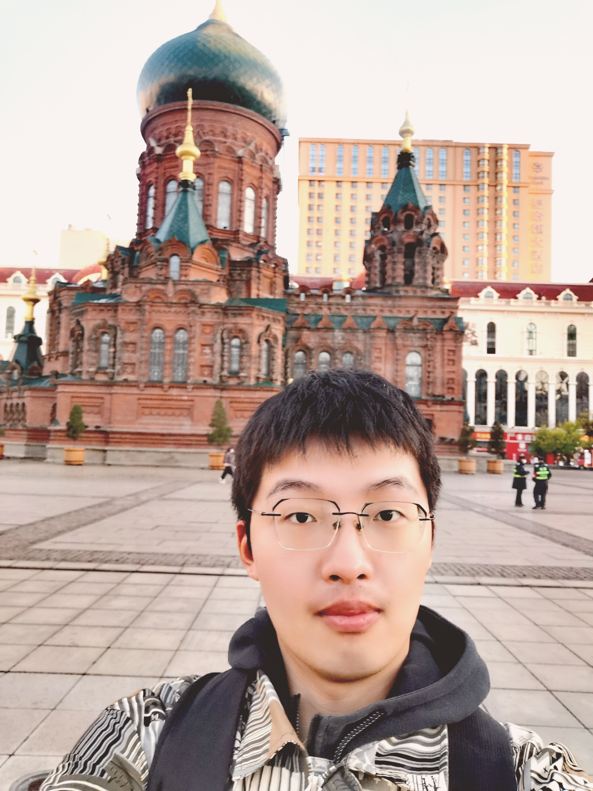

|  | Chengxi Li(李成蹊) School of Computer Science and Technology Harbin Institute of Technology(HIT), China. Email:1190202215@stu.hit.edu.cn CV GitHub |
I am an undergraduate student at Harbin Institute of Technology. I am interested in Natural Language Processing areas.
Currently I am actively searching for a Ph.D. position.
Large Pre-trained Model
Task-oriented Dialogue System
Spoken Language Understanding
Harbin Institute of Technology
B.E. In Computer Science and Technology
September 2019 to NOW
Natural Language Processing.
Supervisor: Prof. Wanxiang Che and Ph.D. Libo Qin
Natural Language Processing.
Supervisor: Prof. Wanxiang Che and Ph.D. Libo Qin
Subject: Conscious Artificial Intelligence based on Needs
Supervisor: Prof. Hongzhi Wang
DS-1000: A Natural and Reliable Benchmark for Data Science Code Generation
Yuhang Lai*, Chengxi Li*, Yiming Wang*, Tianyi Zhang*, Ruiqi Zhong*, Luke Zettlemoyer, Scott Wen-tau Yih, Daniel Fried, Sida Wang, Tao Yu
arXiv 2022
The 2020 ICPC Asia Shenyang Regional Contest, Gold Medal
2020 China Collegiate Programming Contest,Mianyang Site, Gold Medal
2022 CCF Outstanding Student
The 2020 ICPC Asia Jinan Regional Contest, Silver Medal
2020 China Collegiate Programming Contest Finals, Silver Medal
The 14th Chinese Northeast Collegiate Programming Contest, 1th Place
The 15th Heilongjiang Provincial CollegiateProgramming Contest, 3th Place
2020, 2021 The People's Scholarship in HIT
2018 National Olympiad in Informatics in Provinces(Jiangsu), First Prize